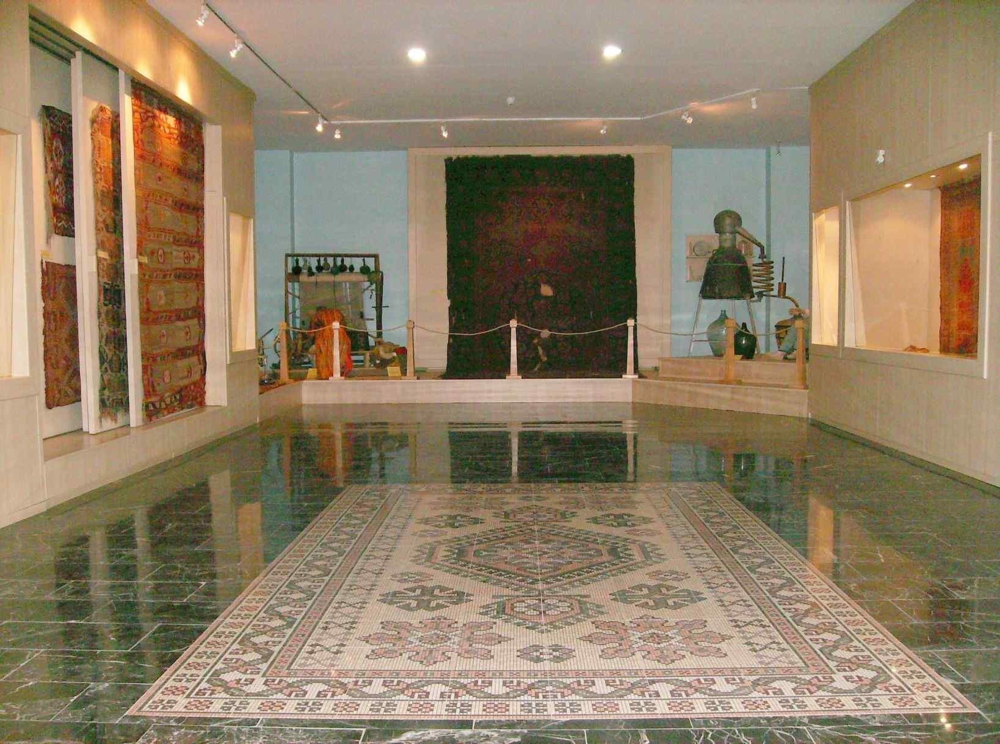
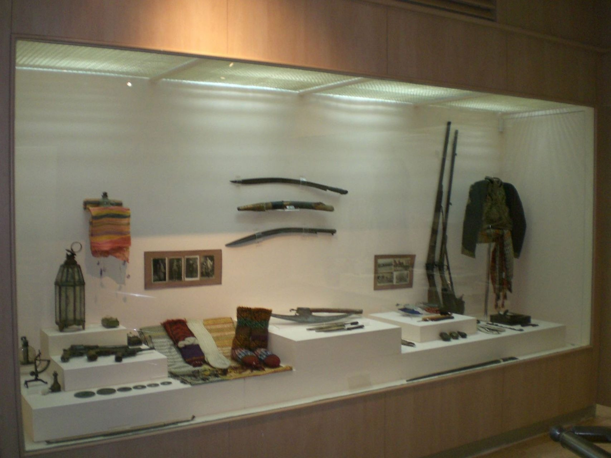
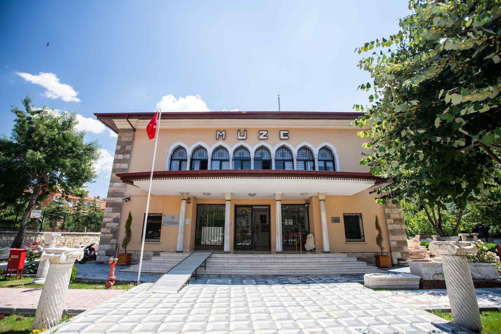
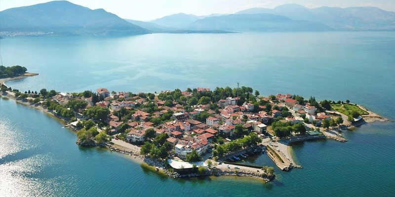

Şehirler
|
ISPARTA |
 |
Antiocheia Ören Yeri
Şehrin akropolisi (iç kale, yüksek şehir), surlarla çevrili olan alanda 46 hektarlık bir arazi üzerinde kuruludur. Batı kapısı üç girişli, kemerli bir zafer takıdır. Augustus Kutsal Alanı’na geçişi sağlayan Propylon’a (anıtsal giriş) benzer mimari ve plastik anlayışıyla inşa edilen kapı, Michigan Üniversitesi’nin 1920’lerde yaptığı kazılarda ilk kez ortaya çıkmıştır.
|
|  |
Isparta Müzesi
Isparta'da ilk müzecilik çalışmaları 1933 yılında Halkevi'nin açılmasıyla başlamıştır. Çevreden toplanan arkeolojik eserler ve İslami mezar taşları müze salonu olarak düzenlenen halkevi binasının bir odasında sergilenmiştir. Halkevi'nin kapatılması ile birlikte eserler çeşitli depolara kaldırılmıştır. 1973 yılında Halil Hamit Paşa Kütüphanesi'nin bir odası müze deposu olarak kullanılmış ve ilk müze memurluğu kurulmuştur.
|
|  |
Uluborlu Müzesi
Kültür sarayı binasının birinci ve zemin katında Isparta Müzesine bağlı bir birim olarak hizmet vermek üzere 23 Haziran 2007 tarihinde hizmete açılmıştır. Her katı 108 m2 olmak üzere iki katlı iç teşhiri ve binanın batı kısmındaki bahçede yer alan açık teşhiri mevcuttur. Uluborlu demircilik ve bakırcılık ürünleri, sağlamlıkları ve keskinlikleriyle iki asırdır civar şehirlerde ünlüdür. Pek çok demir ve bakır araç-gerecin yanında anahtar uydurulamayan kapı kilitleri ve koşum takımları Demircilik Vitrininde sergilenmektedir.
|
|  |
Yalvaç Müzesi
Müze; bahçe teşhiri ve kapalı teşhir olmak üzere iki ana kısımdan oluşmaktadır. Kapalı teşhir; prehistorik eserler, klasik eserler, etnografik eserler ve St. Paul salonları olarak düzenlenmiştir. Prehistorik eserler salonunda; Yalvaç çevresinden derlenen ve muhtelif kazılardan elde edilen küçük eserler ile vatandaşlardan bağış ve satın alma yoluyla gelen eserler teşhir edilmiştir.
|
|  |
ISPARTA
Isparta ve çevresindeki yerleşim tarihi Paleolitik döneme kadar uzanmaktadır. Isparta'nın da önemli yerleşim merkezlerinden biri olduğu Pisidia bölgesine MÖ 2000'lerde Luvi ve Arzava toplulukları yerleşmiştir. Daha sonra bölgeye MÖ 1200'lerden itibaren Frigler, Lidyalılar, Persler ve Makedonyalılar egemen olmuştur. MÖ 323'te Büyük İskender'in ölümüyle beraber sırasıyla Seleukos, Bergama Krallığı ve sonrasında Roma hakimiyetine girmiştir. Roma İmparatorluğu döneminde önemli bir gelişme gösteren Isparta önemli bir piskoposluk ve ticaret merkezi oldu.
|
|